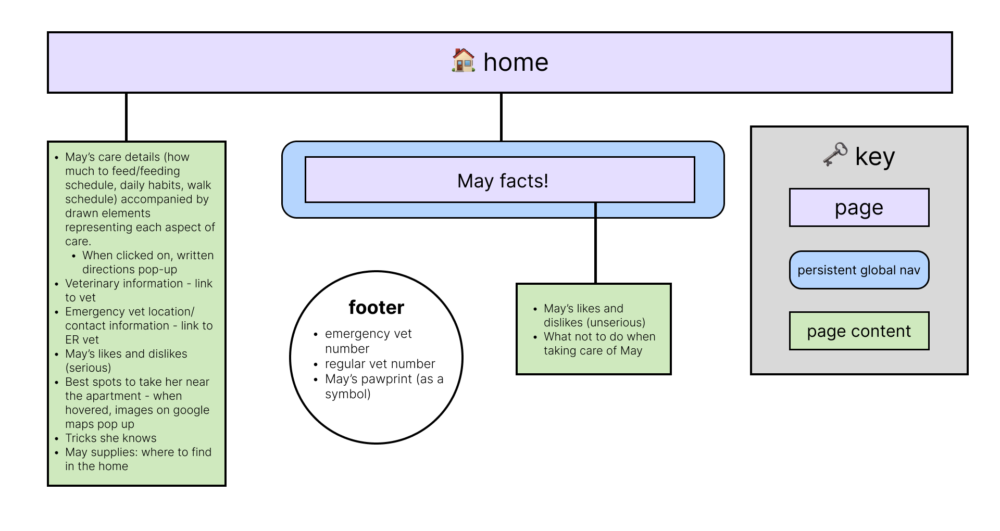
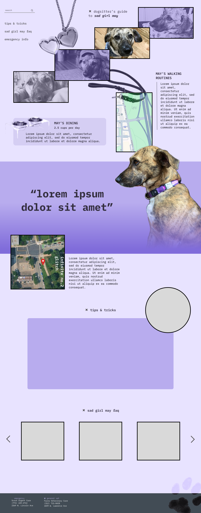
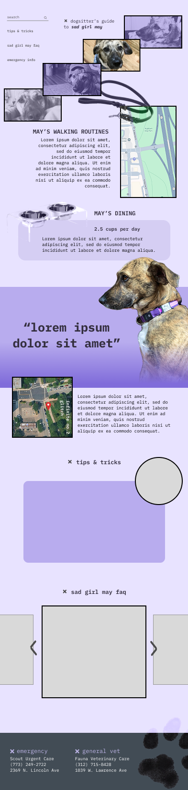
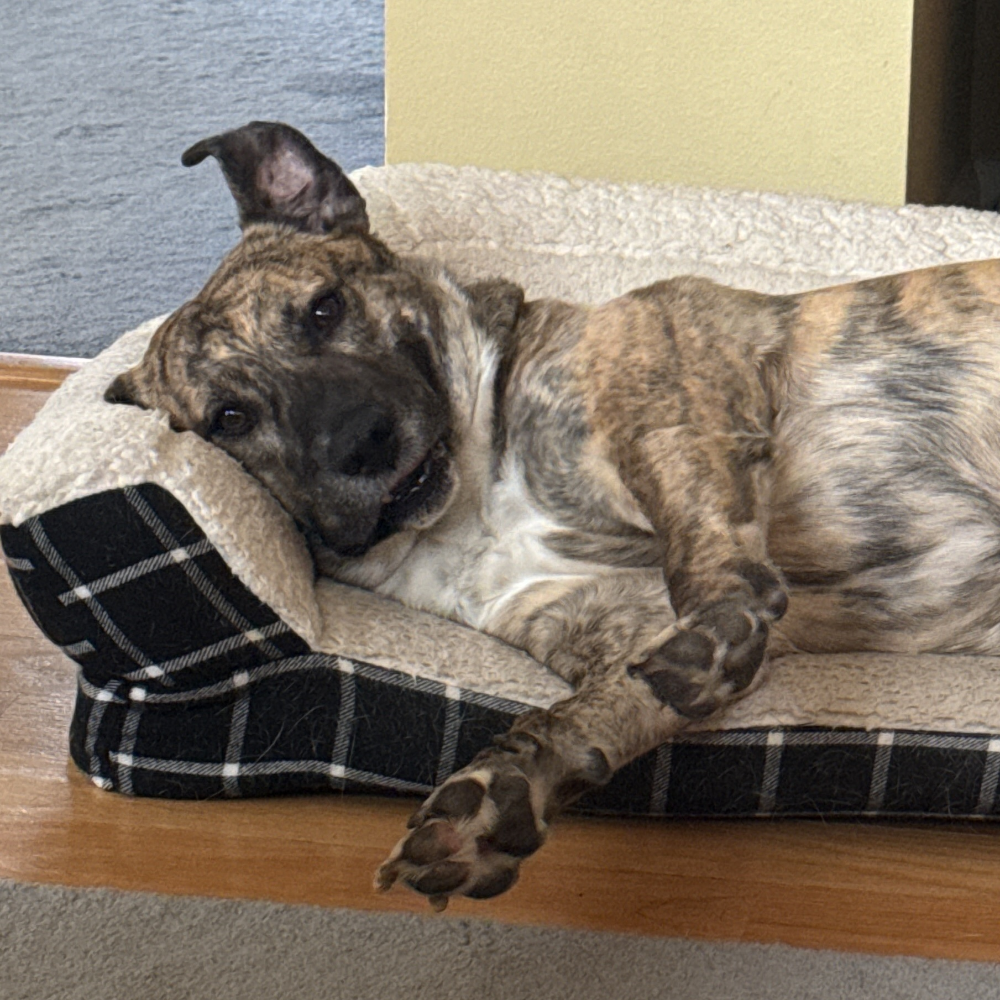

The site will include lots of photos of May (of course), but I will also include hand-drawn elements to accentuate the blank spaces and adorn some of the pictures. I'd love to include some handwritten text as well that I can import via img and supplement with alternative text.
I decided to pivot to a robust homepage, where the left-side navigation will jump down to the appropriate section on the website.
The tips and tricks section will feature images that display text when you hover over them. There will be 7 slides that you can click (or tap) to advance forward.


